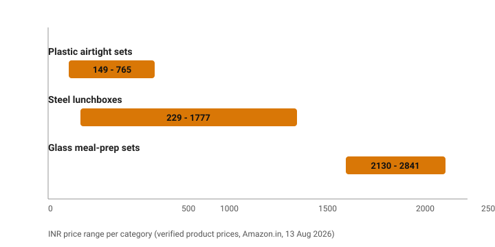

Best Kitchen Storage Containers in India (2026): Airtight Plastic, Steel & Glass
The short version
TL;DR: For most Indian kitchens the best buy is an airtight plastic set like the GOLWYN 6-piece at ₹625 or the Milton Hexa 18-piece at ₹599 for masala, pulses and dry goods, plus a steel leakproof lunchbox such as the Borosil MealMate at ₹999 for carrying food to work. Spring for borosilicate glass (MCIRCO meal-prep sets from about ₹2,130) only if you heat directly in the container or reheat often. Prices below are from Amazon.in on 13 August 2026 and shift with sales.What should you look for in a kitchen storage container in India?
Four things matter more than anything else: the material, the seal, whether it is dishwasher or microwave safe, and stackability. A leakproof container you cannot stack eats shelf space quickly in a small Indian pantry. Airtight matters most for masala, because ground spices lose flavour fast when air gets in. For pulses, dal and rice, you mainly need a container that closes properly and keeps moisture and weevils out, which a cheaper seal can handle.
The seal on cheap boxes fails first. Look at the lid design in the photos: a thick silicone or rubber gasket that sits in the rim keeps things airtight far longer than a bare snap-on lid. This matters more than the plastic thickness.
Plastic or glass or steel: which material is best?
The honest answer is all three, for different jobs.
Plastic is the cheapest, lightest and most stackable option for dry pantry storage. Food-grade, BPA-free plastic (GOLWYN, Milton, HomeWiz) is fine for masala, dal, rice, sugar and dry fruits. The catch: never heat plastic in the microwave, and cheap plastic can absorb spice oils and stain over time.
Steel wins for carrying food. The 2026 generation of steel lunchboxes from Borosil, Milton and CELLO is microwave-safe (unlike older steel tiffins), leakproof and more durable than glass in a bag. Steel does not break when dropped, which is why it dominates the lunch-box segment on Amazon.in.
Glass is best if you reheat in the container. Borosilicate glass goes from freezer to microwave to oven safely and does not absorb stains or odours the way plastic does. It is heavy, and the lids (usually plastic or steel) still leak if you leave them in a bag, so glass suits meal prep at home more than daily tiffin carrying.

Best airtight plastic containers for pantry storage
For dry storage the value picks are the GOLWYN sets, which dominated the airtight-plastic search on Amazon.in by rating volume. The GOLWYN PET set of 6 (1200 ml each) runs ₹625 (M.R.P ₹1,999) at 4.3 stars from 927 ratings, and the 700 ml set of 8 runs ₹650 at 4.1 stars from a much larger review base. Both are transparent, stackable and BPA-free.
The Milton Hexa set of 18 (six 270 ml, six 665 ml, six 1.24 L jars) at ₹599 (M.R.P ₹1,314) is the best-known-brand option at a similar price. Milton is a trusted Indian name in storage, and 18 jars cover a full dal, masala and dry-fruit reset at once.
For masala dabbas specifically, the HomeWiz 4-section box at ₹149 and the RILION 4-in-1 masala box at ₹159 (M.R.P ₹249, 900+ bought in a month) are the cheap, practical picks for the counter.
Best steel containers and lunchboxes
For carrying food, this is the most crowded and best-priced category. The benchmarks from Amazon.in:
| Lunchbox | Setup | Price (Aug 2026) | Rating | Best for |
|---|---|---|---|---|
| JENSONS Premium SS | 2 x 450 ml | ₹229 (M.R.P ₹399) | - | Budget singles |
| CELLO Double Treat | 3 pcs | ₹299 (M.R.P ₹549) | - | Cheapest usable set |
| CELLO MF Trent | 2 x 300 ml | ₹333.85 (M.R.P ₹499) | - | Light office use |
| CELLO Steelox | 4 pcs + jacket | ₹583 (M.R.P ₹829) | - | Complete set with bag |
| Borosil Glory Green | 2 x 280 ml | ₹632 (M.R.P ₹880) | - | Compact, 1-yr warranty |
| MILTON Pro | 3 steel + dabba + bottle | ₹729 (M.R.P ₹1,999) | - | Full tiffin with bottle |
| Borosil Carrymore | 3 pc with chappati box | ₹824 (M.R.P ₹886) | 3.8 (345) | Chapati carrier |
| Borosil Carrymore | 4 pc + tumbler | ₹853 (M.R.P ₹933) | 3.9 (240) | Tiffin with liquid |
| Borosil MealMate | 3 x 370 ml | ₹999 (M.R.P ₹1,045) | 4.1 (377) | Best-rated trusted brand |
| MILTON Modulo Steel | 4 x 400-2400 ml | ₹1,777 (M.R.P ₹2,338) | - | Large family, oven safe |
Check today's prices on Tata CLiQ → (prices move with sales; verify before buying)
Prices and ratings from Amazon.in search results, fetched 13 August 2026. A few budget rows had no rating shown in search; check the product page.
The Borosil MealMate at ₹999 is the safest all-round pick: 4.1 stars from 377 ratings, three 370 ml containers, leakproof, dishwasher safe, and backed by Borosil's one-year warranty. The MILTON Pro at ₹729 (M.R.P ₹1,999, 2K+ bought in a month) is the best-value full kit because it throws in a steel bottle and a chutney dabba. If you only need one occasional container, the JENSONS 2-piece at ₹229 is hard to beat on price.
When to pick steel: if you carry lunch daily or need containers you can drop without breaking.
Best glass storage containers
Glass suits people who reheat leftovers in the same container and who worry about plastic leaching into hot food. The MCIRCO meal-prep sets are the strongest-priced data point: a 22 oz 10-pack at ₹2,449, an 8-pack of 30 oz at ₹2,130.52, and a 24-piece locking-lid set at ₹2,841. All are BPA-free, microwave, oven, freezer and dishwasher safe.
For glass jars rather than meal boxes, the Treo by Milton Cube (set of 3, 310 ml jars with airtight steel lids, 400+ bought in a month) and the AGARO borosilicate 3-piece set (370, 640 and 1040 ml, 300+ bought) are the mainstream options. Prices on these swing a lot with sales, so check the live listing.
Which containers should you buy for which job?
- Masala and spices: small airtight boxes, ideally a 4-section dabba (HomeWiz ₹149 or RILION ₹159).
- Dal, pulses, rice, sugar, dry fruits: a stackable plastic airtight set, GOLWYN 6-piece (₹625) or Milton Hexa 18-piece (₹599).
- Carrying lunch to work or school: a steel leakproof lunchbox, Borosil MealMate (₹999) or MILTON Pro (₹729).
- Reheating leftovers: one borosilicate glass set, Allo Foodsafe or AGARO, or MCIRCO for bulk meal prep.
- Tea, coffee, cookies (visible counter storage): glass jars with steel lids, like the Milton Cube.
FAQ
Which is better for storing masala: plastic or glass?
Either works if the lid is truly airtight; spices need the seal more than the material. Plastic is cheaper and lighter; glass looks better on the counter and does not absorb oil stains. For heavy use, glass jars with steel lids (like the Milton Cube) are the nicer long-term choice.
Are steel containers microwave-safe in India?
Modern microwave-safe steel containers do exist, but check the label. The Borosil, Milton and CELLO steel lunchboxes listed here explicitly say microwave-safe; older plain steel tiffins are not. When in doubt, transfer food to a glass or ceramic dish before reheating.
Is it safe to store hot food in plastic containers?
No tip warm food into ordinary plastic containers. Use food-grade borosilicate glass or microwave-safe steel if the food is hot, and let food cool before sealing plastic to avoid the lid warping and the seal failing.
How many containers does an Indian kitchen actually need?
A practical starting set is 12-18 airtight jars for the pantry (one GOLWYN or Milton Hexa set covers this), one 4-section masala dabba, and 2-3 steel lunchboxes or glass boxes for carrying and reheating. That covers a typical family without overfilling shelves.
Do expensive plastic containers last much longer than cheap ones?
Usually yes for the lid seal. The difference is the gasket and hinge quality, not the plastic body. A bigger, better-sealing lid from Milton or Borosil generally keeps its airtight fit for a year or two longer than a ₹100 generic box, which is why the small price gap is worth paying.